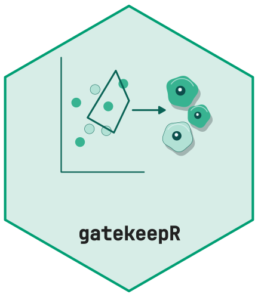
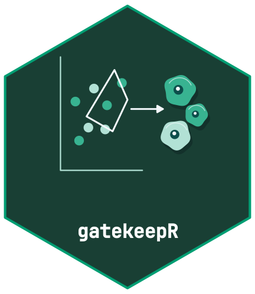

Review and reproducibility
R. Heller
Source:vignettes/review-and-reproducibility.Rmd
review-and-reproducibility.Rmd

Review actions are append-only. Each action has an order, reviewer, reason, image and target identity. Effective results are calculated by replaying the active actions; undo restores the prior effective decision without deleting rows.
config <- gk_example_config()
prep <- gk_prepare(gk_simulate(n_cells = 300L, seed = 7L), config, quiet = TRUE)
thresholds <- gk_thresholds(prep, config, seed = 7L)
classification <- gk_classify(prep, thresholds, config)
#> Warning: 4 hierarchy rules disabled because required markers are not
#> callable.
states <- gk_state_calls(prep, thresholds, classification, config)
structures <- gk_structures(classification, prep)
review <- gk_review(classification, states, structures, thresholds, prep)
image_id <- prep$cells$image_id[[1L]]
review <- gk_set_cut(review, image_id, marker = "PanCK", estimate = 3,
reviewer = "example-reviewer", reason = "Demonstrate a manual boundary")
review <- gk_dispose(review, image_id, cell_id = prep$cells$cell_id[[1L]],
disposition = "DELETE", reviewer = "example-reviewer", reason = "Demonstrate exclusion")
reviewed <- gk_replay(review)
stopifnot(!reviewed$cells$analysed[[1L]])gk_save_review() writes a staged, checksummed checkpoint
and gk_load_review() validates and restores it. A loaded
review retains its checkpoint revision; a stale concurrent save fails
until the review is reloaded. Owner locks persist across R processes.
Once the previous owner has stopped,
gk_load_review(path, takeover = TRUE) explicitly claims
that checkpoint in the new process; never take over an active reviewer.
gk_lock() returns a separate snapshot. Keep that return
value and pass it to gk_export(); the editable review
remains a separate object.
checkpoint_dir <- tempfile("gatekeepR-checkpoint-")
gk_save_review(review, checkpoint_dir)
loaded <- gk_load_review(checkpoint_dir)
snapshot <- gk_lock(loaded, reviewer = "example-reviewer", status = "PENDING")
export_dir <- tempfile("gatekeepR-export-")
gk_export(snapshot, export_dir)
checks <- gk_verify_export(export_dir, expected_review_id = snapshot$review_id_full)
stopifnot(all(checks$ok))Version 2 binds typed source/replay inputs, correction model, ledgers, effective scores/cells/states and reviewer/status to the content ID. It verifies file transport and exact numerical replay before publication. REVIEWED records an explicit human assertion, not authenticated identity or biological validity. Retain the full ID independently when checking delivered exports: a completely replaced export cannot be authenticated by hashes stored only inside itself.
Preserve version 1 checkpoints and exports unchanged. Regenerate
analytical objects from original source/configuration, re-review changed
results and save to new paths. Legacy export inspection is available
explicitly via gk_read_export(path, verify = FALSE) and
does not claim integrity. The new scientific and hash bindings
deliberately reject old mixed analytical objects.